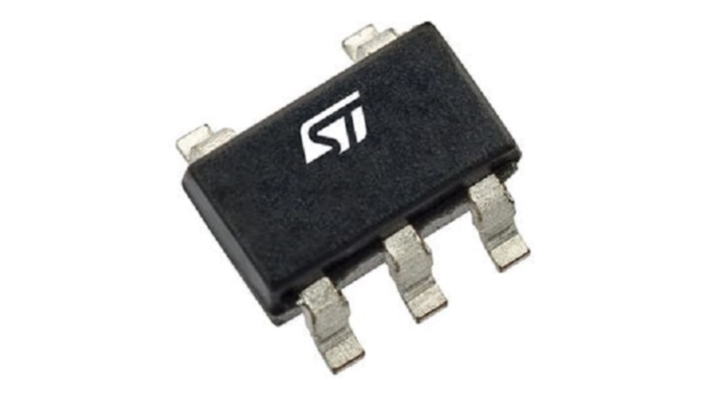

电源 IC：LDO 与 DCDC 的分工
这块板上有 8 颗电源芯片：CORE 板上 U7（ME6209A33）供 SNVS、U12（XC6206P282）供 CSI 2.8V、U6/U11（MT3420B）供 ARM/SOC 与 DDR 1.35V、U8（TMI3113）供 VDD_HIGH、U9（TMI6030）供 SD 1.8/3.3V；MINI 板上 U6/U4（DCJW5060）把 DC_IN 先降到 5V、再降到 3.3V。它们的分工不是随意的：大电流、高压差必须 DCDC；小电流、低噪声、常电用 LDO。

读完这一章，你应该能
- 用压差、静态电流、效率三个数决定「LDO 还是 DCDC」
- 算 LDO 的耗散与结温，判断它贴在小板上会不会烫
- 用 Vout=Vref(1+R1/R2) 反推本板每一路输出，并核对图上标注
- 解释前馈电容、软启动、使能、PG 四个脚各自解决什么问题
- 按布局规则判断一块电源板为什么会「纹波大/不稳/发热」
2.6.1LDO：三个参数，一个算式
| 参数 | 含义 | 本板实例 | 陷阱 |
|---|---|---|---|
| Vdropout | 维持稳压所需的最小输入-输出差 | ME6209 约 0.1–0.3V@100mA | 输入降到 3.4V 时 3.3V 输出开始塌 |
| Iq | 静态电流（无负载时自耗） | ME6209 约 1–3µA；XC6206 约 1µA | 待机功耗预算的主要项 |
| PSRR | 电源抑制比（dB） | 1kHz 约 60–70dB，高频迅速下降 | 不能靠它滤 DCDC 的高频纹波 |
LDO 的本质是一个受控的耗散型器件：输入输出差全部变成热。核心算式：
Pdiss = (Vin − Vout) × Iout + Vin × Iq
算例：U7（ME6209A33），输入 5V、输出 3.3V、负载 150mA：P=(5−3.3)×0.15=0.255W。SOT-23-5 的 RθJA≈250°C/W，温升 64°C；环境 50°C 时 Tj≈114°C——能工作，但已经很烫。
若换成 12V 输入降到 3.3V、同样 150mA：P=1.3W，温升 325°C，芯片直接烧。这就是「高压差必须 DCDC」的硬理由——LDO 的效率约等于 Vout/Vin，12V→3.3V 只有 27%，其余 73% 全变热。
2.6.2DCDC：反馈分压决定输出，Vref 决定一切
所有可调 DCDC 的输出都由同一个公式给出：
Vout = Vref × (1 + Rtop/Rbottom)
本板逐路核对（图上真实阻值）：
| 芯片 | Rtop / Rbottom | Vref | 输出 |
|---|---|---|---|
| U8 TMI3113（VDD_HIGH） | R64 100K / R66 22K | 0.6V（图上标注） | 0.6×(1+4.545)=3.33V |
| U6 MT3420B（ARM/SOC） | R56 124K / R61 100K | 0.6V | 0.6×2.24=1.34V |
| U11 MT3420B（LVDDR3） | R78 124K / R81 100K | 0.6V | 1.34V |
| U4 DCJW5060（DCDC_3V3） | R55 49.9K / R68 15K | ≈0.768V | 0.768×4.327=3.32V |
| U6 DCJW5060（VBIN） | R54 84.5K / R69 15K | ≈0.768V | 0.768×6.633=5.09V |
这张表就是「读原理图」的核心训练：看到两颗电阻跨在反馈脚（FB）与地之间，就套公式算输出，再和图上标注对照。算出来差 5% 以上，要么阻值抄错、要么 Vref 不是你以为的值。
注意 U4 与 U6 用的是同一个 Vref（0.768V），却给出 3.32V 与 5.09V 两个输出——差别全在 Rtop。这也是 49.9K 与 84.5K 是 E96 值的原因：为了把输出精确到 1% 以内，必须用细分的阻值。
2.6.3效率与损耗：DCDC 的钱花在哪
同步 Buck 的效率可以拆成四项损耗：
- 导通损耗：I²×(Rds(on),HS×D + Rds(on),LS×(1−D))
- 开关损耗：≈½×Vin×Iout×(tr+tf)×fs
- 电感铜损：I²×DCR
- 驱动与静态损耗：Qg×Vgs×fs + Vin×Iq
算例（12V→5V/1A/500kHz，HS 50mΩ、LS 30mΩ、DCR 45mΩ）：
- 导通：1²×(0.05×0.417+0.03×0.583)=39mW
- 开关：0.5×12×1×(20ns)×500k≈60mW
- 电感：45mW
- 合计 ≈144mW，输出 5W → 效率约 97%（未计磁芯与驱动）
对比 LDO 同样 12V→5V/1A：耗散 (12−5)×1=7W，效率 42%。这就是为什么板上除了常电/低噪声域，几乎全是 DCDC。
2.6.4四个「小脚」：EN、SS、PG、FB 前馈
- EN（使能）：本板用 R53 100K 上拉到 VM，配合分压设定开启阈值。EN 悬空会随机开关，必须给确定电平。
- SS（软启动）：外接电容决定输出电压爬升时间，防止上电浪涌把输入拉塌。
- PG（Power Good）：开漏输出，电压到位才释放，供 SoC 做时序控制。
- FB 前馈（R52 1K + C11 102）：在反馈分压上端并一颗小电容，给环路加一个零点提升瞬态响应。零点 f≈1/(2π×1k×1nF)=159kHz。
前馈电容不是「随便加」：太大会让高频增益过高、噪声放大甚至振荡；太小则没效果。经验值是让零点落在 1/2–1 倍穿越频率。
2.6.5布局：电源好不好，一半看 PCB
- 输入电容紧贴 Vin-GND 脚：高 di/dt 环路越小，辐射与振铃越小。放在电感对面是无效的。
- FB 走线短、远离 SW 节点：FB 是高阻节点，一根长线就是天线，会把开关噪声直接注入环路。
- SW 节点铜皮小：它是 dv/dt 最大的节点，铜皮越大辐射越强（散热上有利，需折中）。
- 功率地与信号地单点汇合，在芯片 GND 脚附近；不要让 FB 的地回路绕过大电流路径。
- 大电流走线宽度：1oz 铜、温升 10°C 时，1A 约需 0.5mm、2A 约 1mm、3A 约 1.5mm；实际常按 2 倍余量走。
本板 CORE p1 的电源区域把「输入电容阵列 + 电感 + 输出电容」排成一条直线，FB 分压紧贴芯片——这就是可复制的布局范式。
2.6.6怎么测：四个动作
- 空载/满载电压：差值反映负载调整率；超过 3% 说明反馈或走线有问题。
- 纹波：示波器 20MHz 带宽、短地弹簧，测输出电容两端。>100mVpp（3.3V 轨）要查输出电容与布局。
- 效率：Pout/Pin，输入电流用分流电阻或电源读数。低于 80%（Buck）说明损耗异常。
- 热：满载 10 分钟后点温。电感 >80°C、DCDC >90°C 都要复核。
五个坑
① 12V 直接 LDO 到 3.3V：效率 27%，芯片烧。
② 只看 Vref 不看分压：输出差 5% 以上通常是把 Rtop/Rbottom 抄反了。
③ 输入电容放在电感远端：等于没放，SW 振铃照样打穿。
④ FB 走线过长：输出抖动、纹波大，甚至振荡。
⑤ 忽视软启动：大容量输出上电瞬间把输入拉到欠压，系统反复重启。